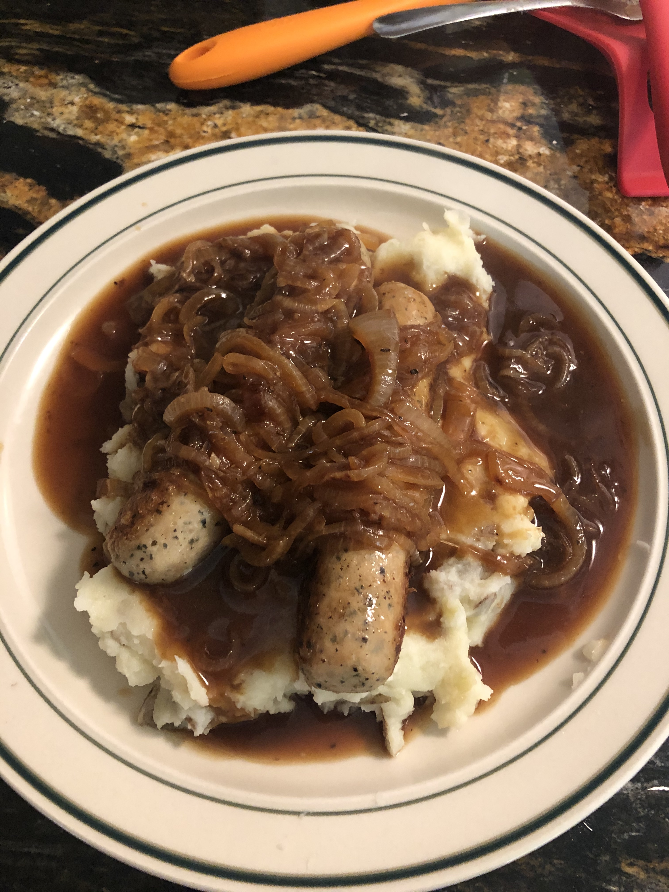

Chicken Bangers and Mash with Onion Gravy

The star of this dish is the chicken onion gravy.
Ingredients
For the Gravy
- 2 Tb neutral oil
- 2 Tb butter
- 2 large onions, thinly sliced
- 1 Tb balsamic vinegar
- 1 Tb soy sauce
- 1 tsp sugar
- 2 1/2 C chicken bone broth or stock
- 1 rounded tb of cornstarch
- 2 Tb of cold water
- salt to taste
- pepper to taste
For the Mash
- 3 large potatoes (about three lbs), cubed
- 8 Tb butter, cubed
- 1/4 C milk + more for desired consistancy
- salt to taste
- pepper to taste
For the Bangers
- 2 Tb oil
- 6-8 thick chicken sausages
Steps
- Put the potatoes in a large pot of water and bring to a boil. Then reduce heat and simmer until potatoes are tender and can easily pierced with a fork. The potatoes will likely be tender around step 6.
- Move to the Gravy: in a medium saucepan over low heat melt butter and oil. Add onions and cover. Let simmer for about 10 minutes.
- Add balsamic vinegar, soy sauce, and sugar to the onions and stir well. Cover and simmer for 5 more minutes
- Add chicken broth/stock and let it softly boil for 5 minutes
- Mix cornstarch and cold water in heat-proof ramekin.
- Add some of the hot gravy liquid to the cornstarch slurry and mix well. Pour the cornstarch slurry into the gravy. Raise the heat and bring the gravy to a boil for 10 minutes. Keep warm until ready to serve.
- Once the potatoes are tender, drain and return to stove. Add the butter and milk and mash them roughly. Add seasoning and mash throughly. Add more milk until desired consistancy is reached. Move off heat and cover.
- In a large frying pan, heat oil and fry sausages over medium heat. Fry until firm and golden brown on 2 sides. Precooked sausages will cook faster than raw sausages.